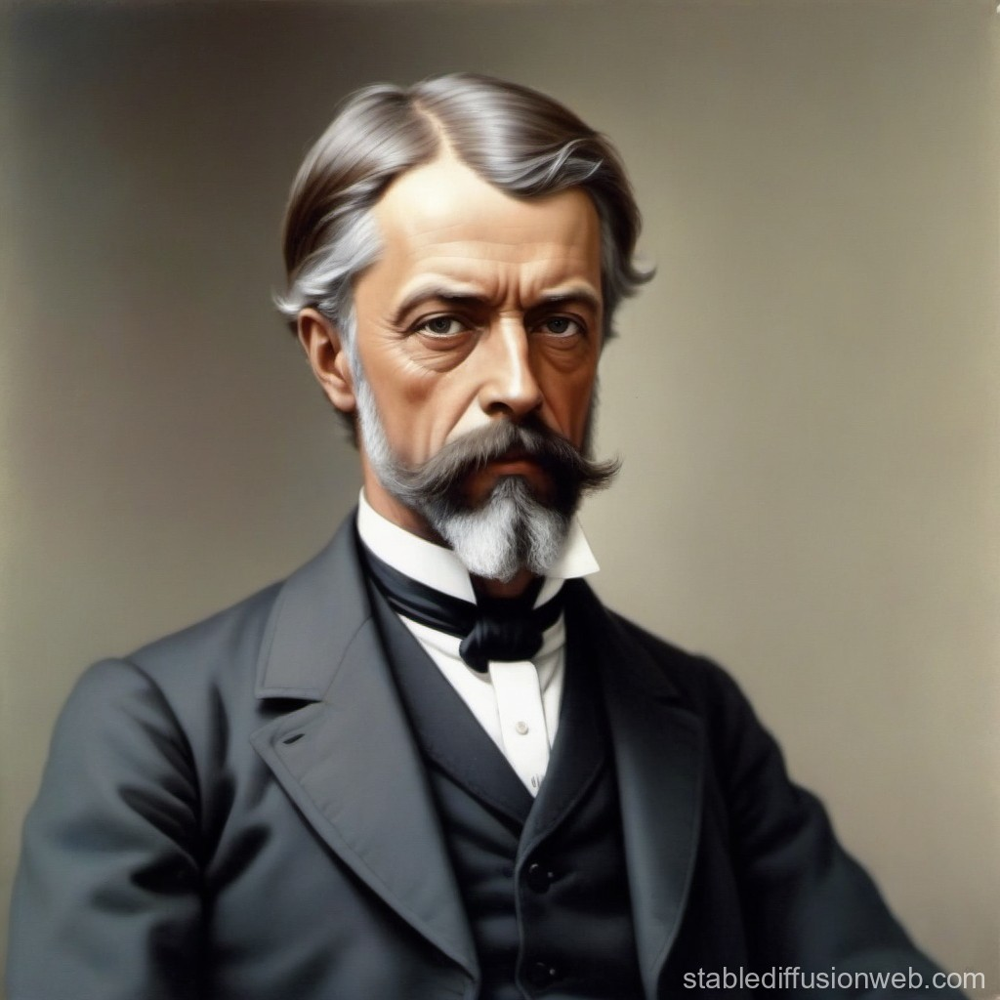

Henri Fayol
considerado uno de los padres de la administración moderna, fue un ingeniero y teórico francés que desarrolló importantes aportaciones en la administración de empresas.
Fayol defendió que la división del trabajo especializa a los empleados en tareas específicas, lo cual aumenta la eficiencia y mejora la habilidad en la ejecución de las tareas, pues permite que cada trabajador se enfoque en una actividad en la que puede volverse experto.
Fayol formuló 14 principios de administración que siguen siendo estudiados y aplicados hasta hoy. Algunos de estos principios incluyen:
- Autoridad y responsabilidad: Los gerentes deben tener la autoridad para dar órdenes, pero también deben asumir la responsabilidad de las decisiones que toman.
- Disciplina: La obediencia y el respeto son esenciales para el buen funcionamiento de una organización.
- Unidad de mando: Cada empleado debe recibir órdenes de un solo superior para evitar confusión y conflictos.
- Unidad de dirección: Todos los miembros de una organización deben trabajar en función de un plan unificado.
- Subordinación del interés individual al interés general: Los intereses del grupo deben prevalecer sobre los intereses individuales.
- Equidad: Los líderes deben ser justos con sus empleados para lograr la lealtad y el compromiso.
Fayol fue pionero al desarrollar una teoría de la administración aplicable a cualquier tipo de organización, no solo a la industria, ya que sus principios y funciones se pueden adaptar a cualquier tipo de empresa o institución. Este enfoque hizo que sus ideas fueran ampliamente aplicables y reconocidas.
Fayol fue el primero en definir y clasificar las funciones administrativas, las cuales consideraba como la base de la administración. Estas funciones son:
- Planificación: Definir objetivos y trazar un plan para alcanzarlos.
- Organización: Disponer y estructurar los recursos, tanto humanos como materiales, para implementar el plan.
- Dirección: Guiar y motivar a los empleados para ejecutar el plan.
- Coordinación: Asegurar que todas las actividades se realicen de manera armoniosa.
- Control: Evaluar y verificar que los objetivos se estén cumpliendo y hacer ajustes si es necesario.
Fayol también subrayó la importancia de la capacitación y formación de los gerentes, pues sostenía que una administración eficaz depende de gerentes competentes y bien preparados.
Fayol también subrayó la importancia de la capacitación y formación de los gerentes, pues sostenía que una administración eficaz depende de gerentes competentes y bien preparados.